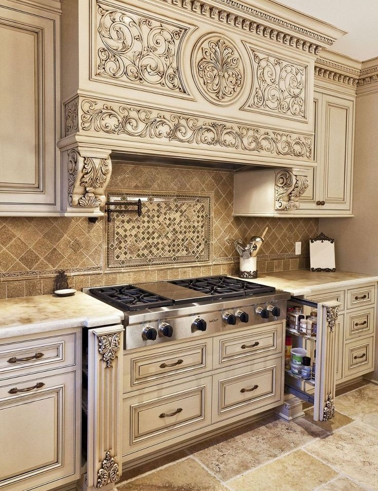

طراحی و سبکهای کلاسیک، یکی از زیباترین و فاخرترین مدلهای طراحی خانه و آشپزخانه هستند. کلاسیک به معنای چیزی است که مدرن نیست؛ بنابراین تاریخچهی آن، قدمت بسیار بالایی دارد. از عمده دلایلی که باعث شده است طراحان امروزی، به چیدمان و دکوراسیون آشپزخانهها اهمیت بیشتری دهند، باز یا اوپن بودن آشپزخانههای امروزی است؛ به این معنی که فضای داخلی آنها، دیگر نسبت به گذشته پنهان نیست بلکه به طور واضح در جلوی چشم است؛ ازین رو اگر چیدمان و دیزاین خانهتان کلاسیک است، باید از کابینت کلاسیک استفاده کنید تا هماهنگی و همخوانی بین اجزای دکوراسیون منزلتان به چشم آید.
کابینت کلمهای فرانسوی و به معنای محفظهای برای نگهداری است. اگر چه به نظر میرسد که آشپزخانه بدون وجود کابینتها، تکمیل نیست، اما شاید برایتان جالب باشد که بدانید چیزی در حدود ۲۰۰ سال، بیشتر از عمر کابینت آشپزخانه نمیگذرد! بنابراین کابینتهای دوستداشتنی که امروز عصای دست ما هستند، تنها دو صده است که به محلی برای نگهداری ظرف و ظروف تبدیل شده است.
کلاسیک در لغت ، به معنای چیزی است که رایج و مورد قبول است و در واقع، چیزی است که جدید نیست! دکوراسیون کلاسیک، سبکی فاخر و ارزشمند در چیدمان منزل به حساب میآید و با وجود آن که امروزه تنوع در مدل و سبک کابینتهای آشپزخانه به وفور دیده میشود اما هنوز، کابینت آشپزخانه کلاسیک از محبوبیت ویژهای برخوردار است.
کابینت کلاسیک ، به مدلهایی از کابینت آشپزخانه گفته میشود که دارای طرحها و حکاکیهای سنتی و باستانی است. برخلاف کابینت مدرن که ساده است، کابینت کلاسیک اصلا کابینتی ساده نیست؛ بلکه انواع حکاکیها و المانهای تزئینی بر روی بدنه و درهای آن وجود دارد و باعث میشود نمای این کابینتها، فاخر، سلطنتی و اشرافی به نظر آید.
ویژگیهای ساختاری و شکل ظاهری کابینت کلاسیک در آشپزخانه با مواردی همچون منبت و معرق، برجستهسازی و حکاکی بر چوب، طراحی سر ستون و دستگیرههای فاخر، بکارگیری گلدکوراتیوهای مختلف، استفاده از رنگهای مات و سنگین، قفسههای جادار و عمیق، کابینتهای ویترینی زیبا، طرحهای شلوغ و پُر کار و قرینهسازیهای زیبا در طراحی عجین است.
-قرینهسازی در همه بخشهای کابینت الزامی است.
-هود درون کاور قرار میگیرد و قابل مشاهده نمیباشد.
-جزئیات در این سبک پررنگتر دیده میشود.
-برای آشپزخانههایی با متراژ بزرگ مناسب است.
-در کابینت کلاسیک از رنگهای سنگین و باوقار استفاده میشود و رنگهای خاص و پرانرژی معمولا کاربردی ندارند.
-ارزشمندترین نمونهی کابینت کلاسیک آشپزخانه، کابینتهای تمام چوب است.
-در طراحی کابینت کلاسیک، نباید از یراقآلات و شیرآلات مدرن استفاده کرد.
-کابینت کلاسیک برای آشپزخانههایی مناسب است که دکوراسیون کلی خانه، به سبک کلاسیک چیدمان و طراحی شده باشد.
-کابینت کلاسیک برای آشپزخانههایی مناسب است که دکوراسیون کلی خانه، به سبک کلاسیک چیدمان و طراحی شده باشد.
-کابینت کلاسیک مملو از طرحها و مدلهای باستانی و سنتی است.
-اگر آشپزخانه کوچکی دارید، طرحهایی را انتخاب کنید که نقشهای آن درشت و واضح داشته باشند. انتخاب طرحهای شلوغ، سبب کوچک نشان داده شدن فضا میگردد.
-اگر آشپزخانه شما کم نور است، کابینتها را با رنگ روشن را انتخاب کنید یا از نورپردازی قوی و هوشمند استفاده کنید.
-محیط کابینت را از هجوم حشرات در امان نگه دارید. برای این کار لازم است هر سه ماه یکبار فضای درونی و زیر کابینتها را به دقت وارسی کنید.
-محفظه کابینت را بر اساس فضای معمول آن پر کنید، پر کردن بیش از حد محفظه، کابینت را دفرمه خواهد کرد و از زیبایی آن میکاهد.
-اجسام تیز را در مجاورت کابینتهای کلاسیک قرار ندهید زیرا باعث ایجاد خراش بر روی سطح آن میشود و زیبایی آن از دست میرود.